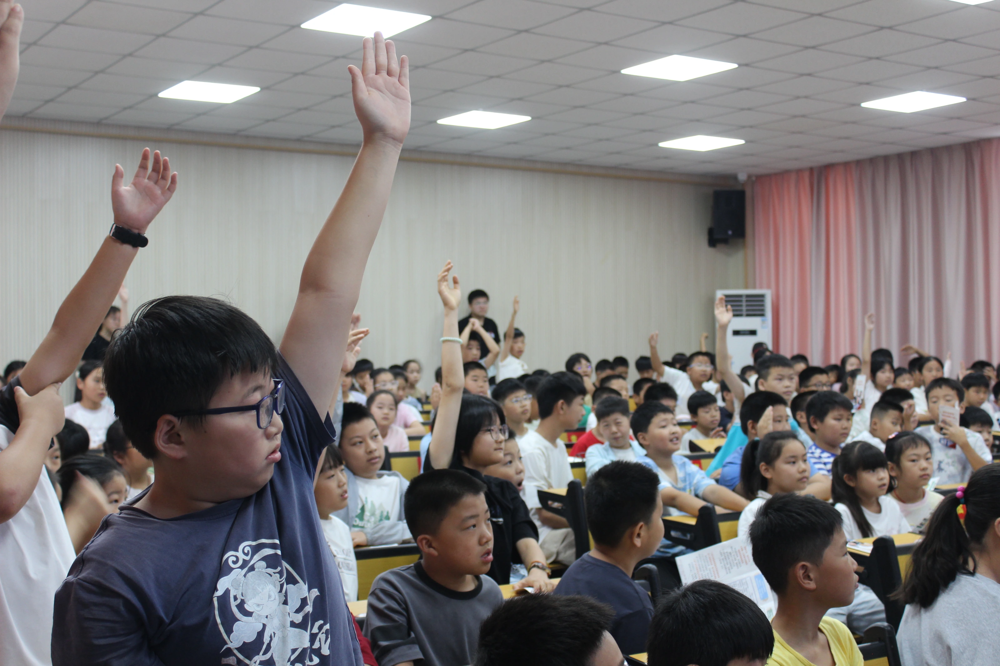
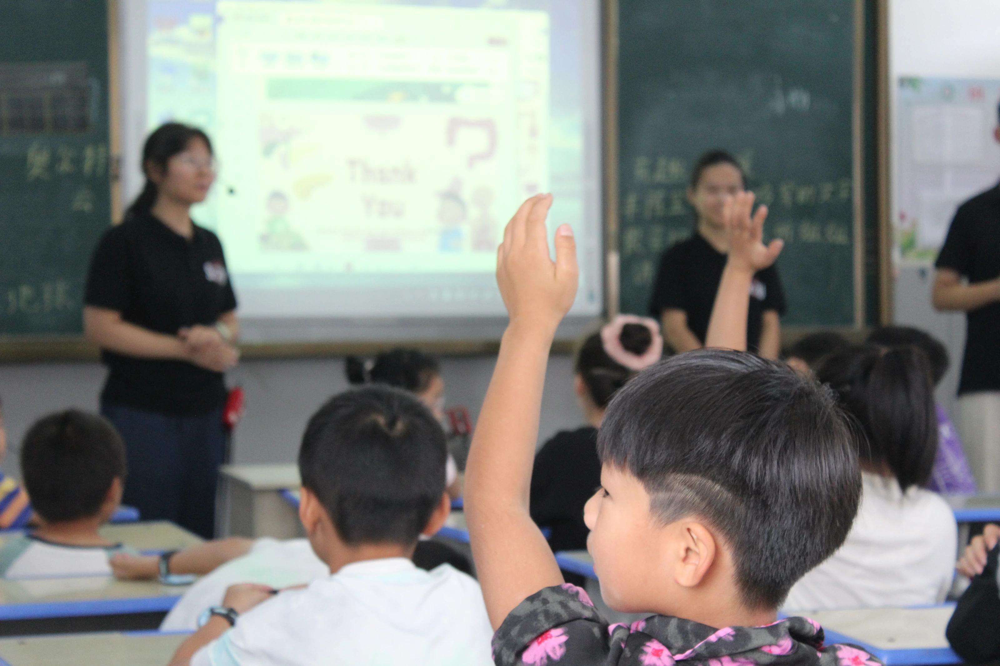
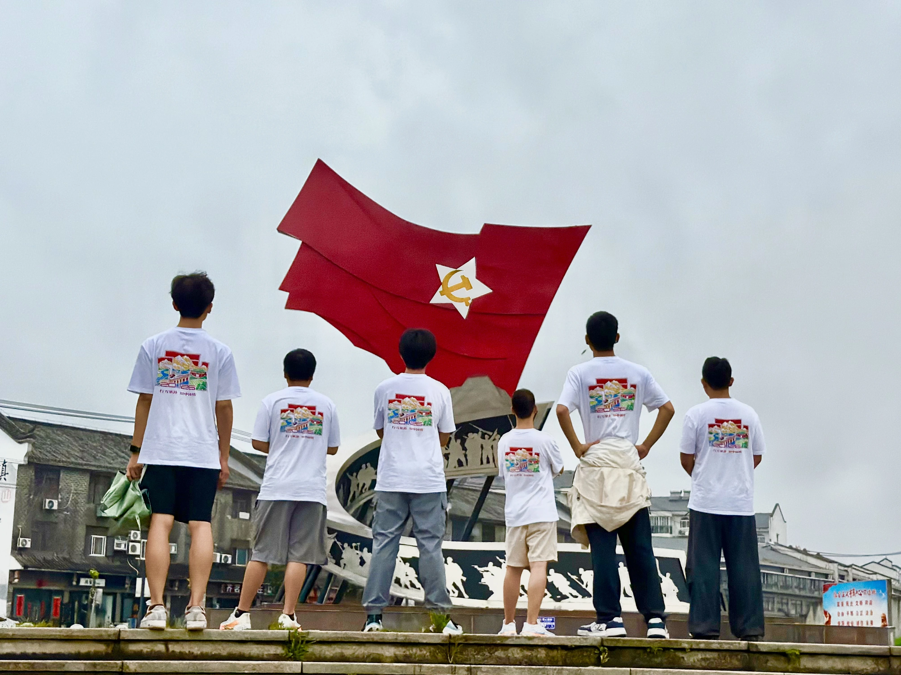
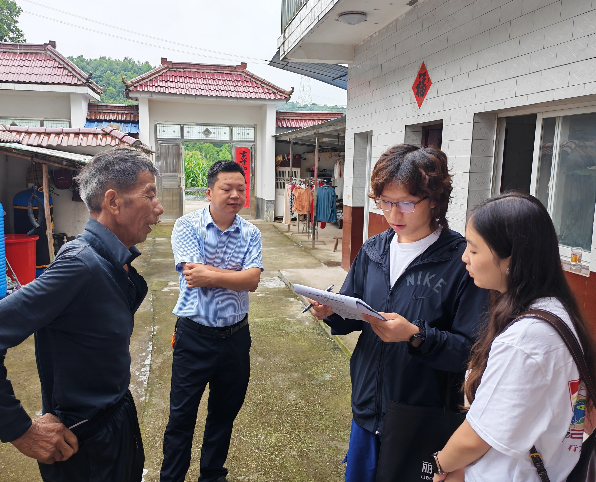
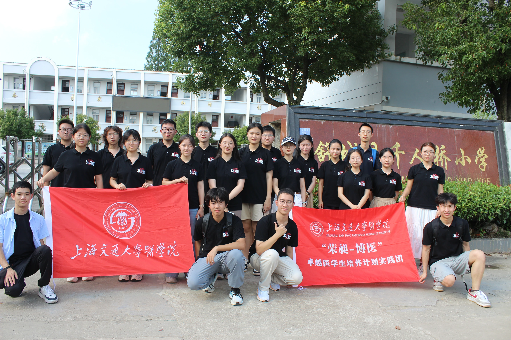
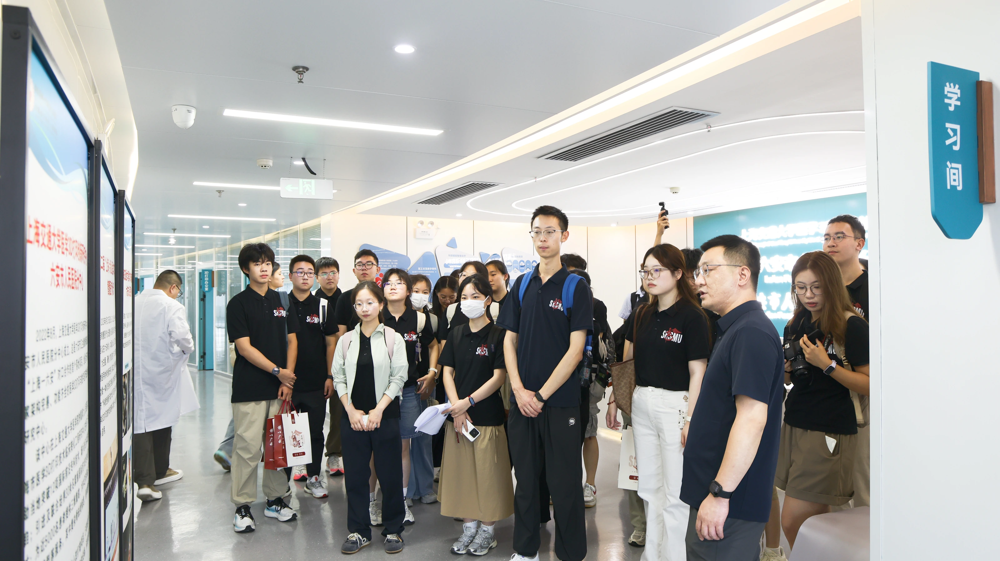
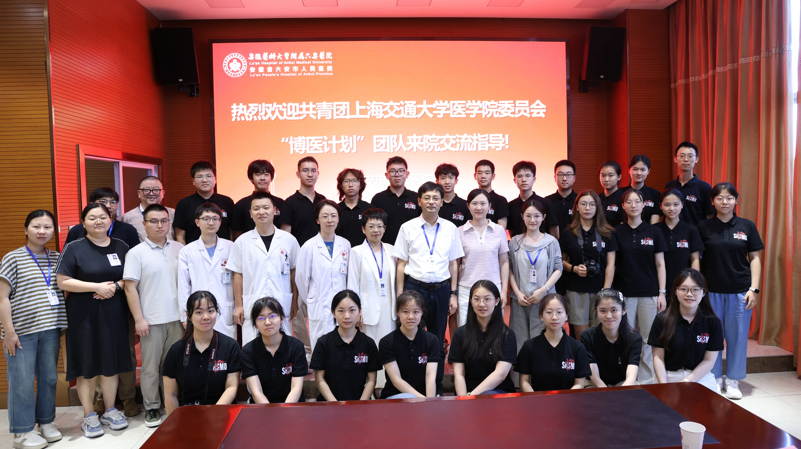
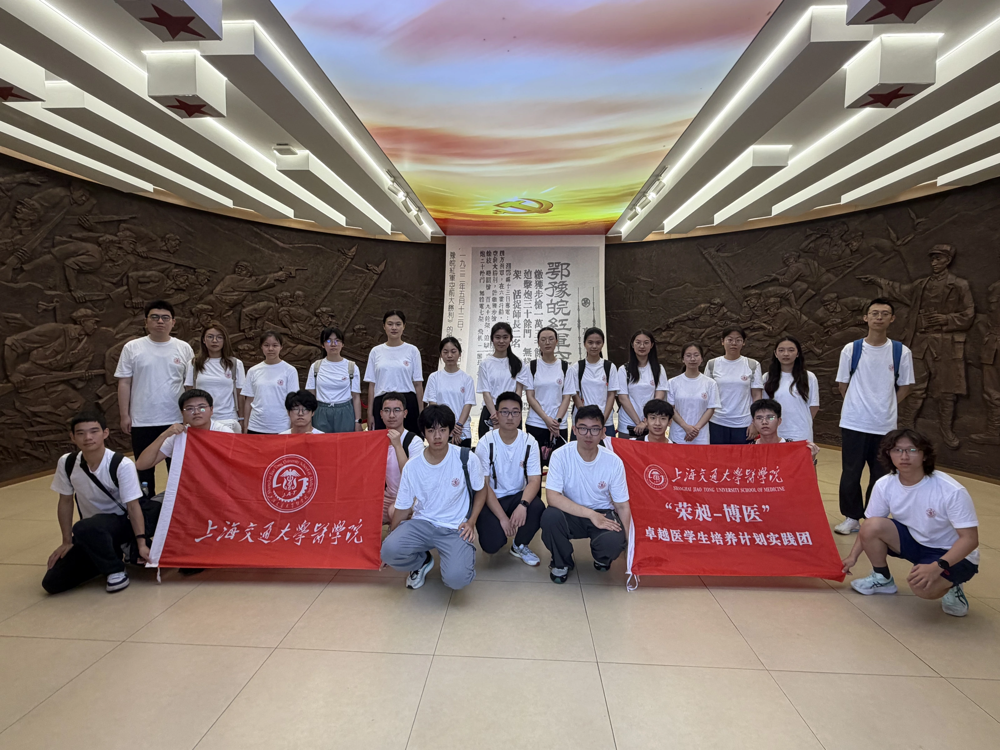

实践留下的思考
实践感想
行走之后，回声未止。读读成员在医院、村庄与课堂中留下的感想，也写下你此刻的想法。
查看 ↗ 山海有回声
山海有回声


我们的使命


本期实践



医学探索


实践留下的思考
行走之后，回声未止。读读成员在医院、村庄与课堂中留下的感想，也写下你此刻的想法。
查看 ↗从影像继续出发
医生的讲述、村民的日常、孩子举起的手。沿着十八则影像故事，走近这段从上海到六安的旅程。
查看 ↗